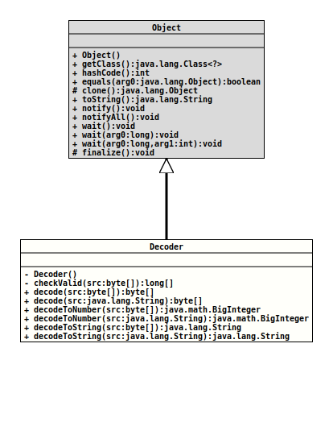

java.lang.Object
org.tquadrat.foundation.util.Base32.Decoder
- Enclosing class:
Base32
@ClassVersion(sourceVersion="$Id: Base32.java 1060 2023-09-24 19:21:40Z tquadrat $")
@API(status=STABLE,
since="0.1.0")
public static final class Base32.Decoder
extends Object
The Decoder for Crockfords's Base 32 format.
- Author:
- Thomas Thrien (thomas.thrien@tquadrat.org)
- Thanks to:
- Douglas Crockford (douglas@crockford.com)
- Version:
- $Id: Base32.java 1060 2023-09-24 19:21:40Z tquadrat $
- Since:
- 0.1.0
- UML Diagram
-

UML Diagram for "org.tquadrat.foundation.util.Base32.Decoder"
{kind=link}
-
Constructor Summary
Constructors -
Method Summary
Modifier and TypeMethodDescriptionprivate final long[]checkValid(byte[] src) Checks whether the given argument is a valid Basic 32 sequence and converts it into an array with the symbol values.final byte[]decode(byte[] src) Decodes an array of Base 32 symbols.final byte[]Decodes a Base 32 string.final BigIntegerdecodeToNumber(byte[] src) Decodes an array of Base 32 symbols to a number.final BigIntegerdecodeToNumber(String src) Decodes a Base string to a number.final StringdecodeToString(byte[] src) Decodes an array of Base 32 symbols to a String.final StringdecodeToString(String src) Decodes a Base string to a String.
-
Constructor Details
-
Decoder
private Decoder()Creates a new instance ofBase32.Decoder.
-
-
Method Details
-
checkValid
Checks whether the given argument is a valid Basic 32 sequence and converts it into an array with the symbol values.- Parameters:
src- The data to check.- Returns:
- The symbol values.
- Throws:
IllegalArgumentException- The input data is invalid.
-
decode
Decodes an array of Base 32 symbols.
This is the converse operation to
Base32.Encoder.encode(byte[])- Parameters:
src- The input data.- Returns:
- The decoded value.
- Throws:
ValidationException- The input data is not a valid Base 32 sequence
-
decode
Decodes a Base 32 string.
This is the converse operation to
Base32.Encoder.encodeToString(byte[]).- Parameters:
src- The input data.- Returns:
- The decoded value.
- Throws:
ValidationException- The input data is not a valid Base 32 sequence
-
decodeToNumber
Decodes an array of Base 32 symbols to a number.- Parameters:
src- The input data.- Returns:
- The decoded value.
- Throws:
ValidationException- The input data is not a valid Base 32 sequence
-
decodeToNumber
Decodes a Base string to a number.
This is the converse operation to
Base32.Encoder.encodeToString(BigInteger).- Parameters:
src- The input data.- Returns:
- The decoded value.
- Throws:
ValidationException- The input data is not a valid Base 32 sequence
-
decodeToString
Decodes an array of Base 32 symbols to a String.
This is the converse operation to
Base32.Encoder.encode(String).- Parameters:
src- The input data.- Returns:
- The decoded value.
- Throws:
ValidationException- The input data is not a valid Base 32 sequence
-
decodeToString
Decodes a Base string to a String.
This is the converse operation to
Base32.Encoder.encodeToString(String).- Parameters:
src- The input data.- Returns:
- The decoded value.
- Throws:
ValidationException- The input data is not a valid Base 32 sequence
-